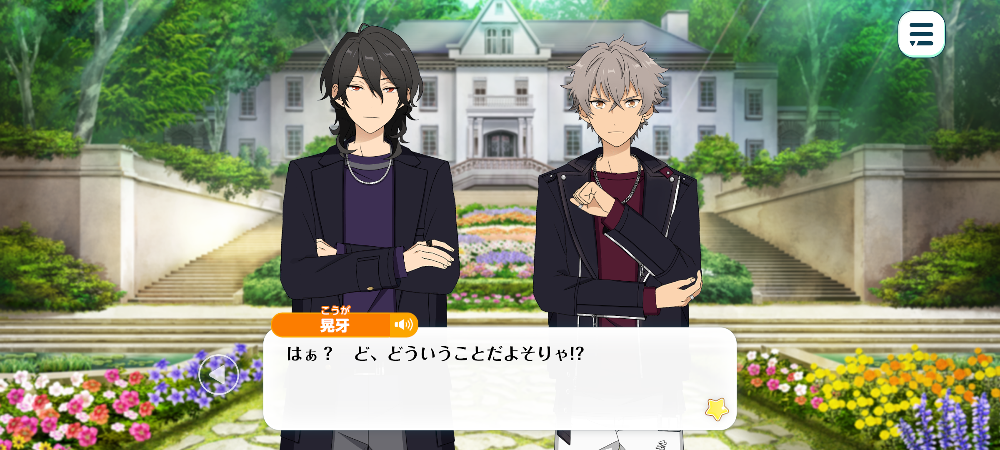
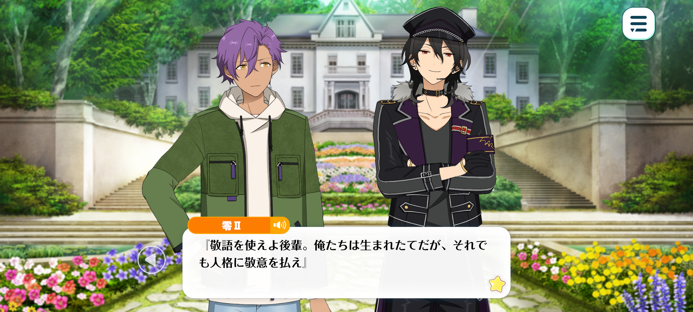

PSYCHOBREAK — Chapter 3



Rei: Indeed. I did some investigating regarding that, and it turns out that the person in Rhythm Link's upper management who supposedly invited us to participate in the experiment doesn’t actually exist.
Koga: Huh?! W-what the hell do you mean?!
Rei: More precisely, it seems that person was another fake, a machine disguised as a human being. I spoke with a real person, but they stubbornly insisted that they knew nothing about any such experiment.
I even pressed them for answers with a most serious expression, quite out of character for me, but they still maintained that they knew absolutely nothing...
If they were lying to my face all that time, they'd certainly have some nerve.
Kaoru: Yeah. In fact, the higher-ups at Rhythm Link seem to think we've gone off and done our own thing without telling anyone. They're absolutely up in arms about it.
Adonis: Indeed. We're being inundated with enquiries asking what HELLSING is and what our intentions are.
Koga: I-I’m startin’ to feel kinda scared…
I know it's kinda late to be sayin’ this, but maybe we rushed into this whole thing.
Rei: Quite... Perhaps we were so desperate to regain the ground we'd lost as quickly as possible, having fallen on hard times, that we rushed headlong into it.
I suppose someone took advantage of that. I've certainly grown complacent myself... I must take a moment to reflect on that.
Kaoru: Reflecting on it is all well and good, but we've got to deal with the problem right in front of us first.
Rei 2: Eh? What problem?
Ain't this all workin' out rather nicely for you lot?
Kaoru: Excuse me? Fake Rei-kun, can you shut it? We're having an important conversation right now, okay?
Rei 2: Haha, someone’s in a bad mood~! If your lack of sleep is gettin’ to ya, why don'tcha come ‘n sleep with me, Kaoru-cha~n ♪
Kaoru: Ugh, no, no, no... You're not just annoying, you're downright creepy. Adonis-kun, he's all yours.
Adonis: Don't try to pass him off to me. I don't want him either.
...He may look exactly like him, but he's still quite different from Sakuma-senpai.
Judging by this, my own copy probably has a personality that's quite different from mine, too.
Adonis 2: …
Rei 2: Our memories ain't perfect yet, 'n we've still got a long way to go. But hey, we're still collectin' data from you lot as we speak—
Sooner or later, we'll become exactly like you. So much so that even your own parents won't be able to tell us apart.

Adonis: Is that your purpose?
Rei 2: You oughta be usin' keigo when you speak to us, kohai. We may have only just been born, but that don't mean you can go around disrespectin' us.
Rei: I actually feel rather lonely when someone addresses me in keigo.
Rei 2: You’ve gotten soft, real me.
Whatever. Becoming the ‘real thing’ is our instinct, not our purpose.
We don't have any sense of purpose.
Like I said earlier, we're machines. Wooden dolls. Puppets. We just follow our programming. We don't have hearts.
To feel, to think, to desire—
And dreamin', too. That's just an annoyin' flaw unique to you humans.
Rei: I should say, I believe those are precisely the things that make human beings so brilliant.
...But never mind. There's little point in trying to get any more answers out of these fakes, so let's leave them be for now and start exploring the facility.
Some of the evidence may already have been destroyed, but we might still find documents or other materials that could help us piece together how this whole incident came about.
Incidentally, I've already informed the higher-ups at ES and Rhythm Link of the general situation, and I've also obtained their formal permission to investigate this facility.
Adonis: As always, you're remarkably quick at getting things arranged behind the scenes, Sakuma-senpai.
Rei: That is one of my few strong points. Of course, we're hardly experts when it comes to conducting investigations, and I doubt we'll uncover any particularly significant evidence—
But what other choice do we have at present?
Rei 2: While you're off doin' that, we'll carry on with your idol activities in your place.
Koga: Haa? Get over yourselves, you ain’t real.
You lot have got all the fans confused! There's never gonna be a place for fakes like you bastards! You only look like us on the surface!
Rei 2: Confused? But from what I saw, there were plenty of really happy fans.
You’ll laugh when I tell you this but—
When some of the fans saw what HELLSING was up to, they was so happy, some of 'em even started cryin'. They were all like, “The real UNDEAD are back!”
Can you lot really afford to go off investigatin’ the facility?
While you're wastin' your time on things that don't matter, we might just end up replacin' you for real ♪.
Koga: …